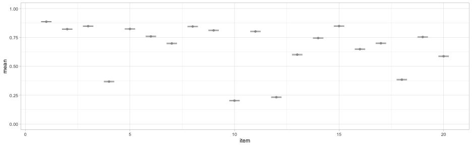

Reviewing what we know
Talk with your neighbor: How would you do each of the following using dplyr?
- Extract only the first and third through ninth columns
- Extract the third column and any column that ends with “response”
- Reorder columns
- Extract only cases from students classified as English Language Learners (ELL)
- Create a new variable that represents the proportion of ELL students by grade
- Order the data in ascending or descending order
- Center a variable (i.e., subtract the mean from each observation)
- Compute the mean and standard deviation of a variable by one or more groups (e.g., mean math score for each school)
First, let’s load in some data
library(rio)
mcrc <- import("../../data/mcrc.csv", setclass = "tbl_df", na = ".") %>%
janitor::clean_names()
mcrc
## # A tibble: 72,948 x 47
## id schid race ethnicity ell
## <int> <int> <chr> <chr> <chr>
## 1 8307 381 White Not Hispanic/Latino
## 2 8308 449 Not Hispanic/Latino
## 3 8309 817 White Not Hispanic/Latino
## 4 8310 979 Black or African American Not Hispanic/Latino
## 5 8311 13 White Not Hispanic/Latino
## 6 8312 410 Black or African American Hispanic/Latino Y
## 7 8313 529 White Not Hispanic/Latino
## 8 8314 967 Black or African American Not Hispanic/Latino
## 9 8315 589 Black or African American Not Hispanic/Latino
## 10 8316 257 Unknown Unknown
## # ... with 72,938 more rows, and 42 more variables: disability <chr>,
## # score <int>, item_1_response <int>, item_1_correct <chr>,
## # item_2_response <int>, item_2_correct <chr>, item_3_response <int>,
## # item_3_correct <chr>, item_4_response <int>, item_4_correct <chr>,
## # item_5_response <int>, item_5_correct <chr>, item_6_response <int>,
## # item_6_correct <chr>, item_7_response <int>, item_7_correct <chr>,
## # item_8_response <int>, item_8_correct <chr>, item_9_response <int>,
## # item_9_correct <chr>, item_10_response <int>, item_10_correct <chr>,
## # item_11_response <int>, item_11_correct <chr>, item_12_response <int>,
## # item_12_correct <chr>, item_13_response <int>, item_13_correct <chr>,
## # item_14_response <int>, item_14_correct <chr>, item_15_response <int>,
## # item_15_correct <chr>, item_16_response <int>, item_16_correct <chr>,
## # item_17_response <int>, item_17_correct <chr>, item_18_response <int>,
## # item_18_correct <chr>, item_19_response <int>, item_19_correct <chr>,
## # item_20_response <int>, item_20_correct <chr>
- Extract only the first and third through ninth columns
library(dplyr)
mcrc %>%
select(1, 3:9)
## # A tibble: 72,948 x 8
## id race ethnicity ell disability
## <int> <chr> <chr> <chr> <chr>
## 1 8307 White Not Hispanic/Latino
## 2 8308 Not Hispanic/Latino
## 3 8309 White Not Hispanic/Latino
## 4 8310 Black or African American Not Hispanic/Latino
## 5 8311 White Not Hispanic/Latino
## 6 8312 Black or African American Hispanic/Latino Y
## 7 8313 White Not Hispanic/Latino
## 8 8314 Black or African American Not Hispanic/Latino
## 9 8315 Black or African American Not Hispanic/Latino
## 10 8316 Unknown Unknown
## # ... with 72,938 more rows, and 3 more variables: score <int>,
## # item_1_response <int>, item_1_correct <chr>
- Extract the third column and any column that ends with “response”
mcrc %>%
select(3, ends_with("response"))
## # A tibble: 72,948 x 21
## race item_1_response item_2_response
## <chr> <int> <int>
## 1 White 3 1
## 2 3 2
## 3 White 3 1
## 4 Black or African American 3 1
## 5 White 3 1
## 6 Black or African American 3 1
## 7 White 3 1
## 8 Black or African American 1 1
## 9 Black or African American 1 1
## 10 Unknown 3 1
## # ... with 72,938 more rows, and 18 more variables: item_3_response <int>,
## # item_4_response <int>, item_5_response <int>, item_6_response <int>,
## # item_7_response <int>, item_8_response <int>, item_9_response <int>,
## # item_10_response <int>, item_11_response <int>,
## # item_12_response <int>, item_13_response <int>,
## # item_14_response <int>, item_15_response <int>,
## # item_16_response <int>, item_17_response <int>,
## # item_18_response <int>, item_19_response <int>, item_20_response <int>
- Reorder columns
mcrc %>%
select(1:6, ends_with("correct"), ends_with("response"))
## # A tibble: 72,948 x 46
## id schid race ethnicity ell
## <int> <int> <chr> <chr> <chr>
## 1 8307 381 White Not Hispanic/Latino
## 2 8308 449 Not Hispanic/Latino
## 3 8309 817 White Not Hispanic/Latino
## 4 8310 979 Black or African American Not Hispanic/Latino
## 5 8311 13 White Not Hispanic/Latino
## 6 8312 410 Black or African American Hispanic/Latino Y
## 7 8313 529 White Not Hispanic/Latino
## 8 8314 967 Black or African American Not Hispanic/Latino
## 9 8315 589 Black or African American Not Hispanic/Latino
## 10 8316 257 Unknown Unknown
## # ... with 72,938 more rows, and 41 more variables: disability <chr>,
## # item_1_correct <chr>, item_2_correct <chr>, item_3_correct <chr>,
## # item_4_correct <chr>, item_5_correct <chr>, item_6_correct <chr>,
## # item_7_correct <chr>, item_8_correct <chr>, item_9_correct <chr>,
## # item_10_correct <chr>, item_11_correct <chr>, item_12_correct <chr>,
## # item_13_correct <chr>, item_14_correct <chr>, item_15_correct <chr>,
## # item_16_correct <chr>, item_17_correct <chr>, item_18_correct <chr>,
## # item_19_correct <chr>, item_20_correct <chr>, item_1_response <int>,
## # item_2_response <int>, item_3_response <int>, item_4_response <int>,
## # item_5_response <int>, item_6_response <int>, item_7_response <int>,
## # item_8_response <int>, item_9_response <int>, item_10_response <int>,
## # item_11_response <int>, item_12_response <int>,
## # item_13_response <int>, item_14_response <int>,
## # item_15_response <int>, item_16_response <int>,
## # item_17_response <int>, item_18_response <int>,
## # item_19_response <int>, item_20_response <int>
- Extract only cases from students classified as English Language Learners
mcrc %>%
filter(ell == "Y")
## # A tibble: 5,687 x 47
## id schid race ethnicity ell
## <int> <int> <chr> <chr> <chr>
## 1 8312 410 Black or African American Hispanic/Latino Y
## 2 8323 32 White Not Hispanic/Latino Y
## 3 8326 520 White Hispanic/Latino Y
## 4 8341 196 American Indian or Alaskan Native Hispanic/Latino Y
## 5 8388 620 White Hispanic/Latino Y
## 6 8405 844 White Hispanic/Latino Y
## 7 8409 585 White Not Hispanic/Latino Y
## 8 8417 390 White Not Hispanic/Latino Y
## 9 8442 851 Not Hispanic/Latino Y
## 10 8459 374 White Not Hispanic/Latino Y
## # ... with 5,677 more rows, and 42 more variables: disability <chr>,
## # score <int>, item_1_response <int>, item_1_correct <chr>,
## # item_2_response <int>, item_2_correct <chr>, item_3_response <int>,
## # item_3_correct <chr>, item_4_response <int>, item_4_correct <chr>,
## # item_5_response <int>, item_5_correct <chr>, item_6_response <int>,
## # item_6_correct <chr>, item_7_response <int>, item_7_correct <chr>,
## # item_8_response <int>, item_8_correct <chr>, item_9_response <int>,
## # item_9_correct <chr>, item_10_response <int>, item_10_correct <chr>,
## # item_11_response <int>, item_11_correct <chr>, item_12_response <int>,
## # item_12_correct <chr>, item_13_response <int>, item_13_correct <chr>,
## # item_14_response <int>, item_14_correct <chr>, item_15_response <int>,
## # item_15_correct <chr>, item_16_response <int>, item_16_correct <chr>,
## # item_17_response <int>, item_17_correct <chr>, item_18_response <int>,
## # item_18_correct <chr>, item_19_response <int>, item_19_correct <chr>,
## # item_20_response <int>, item_20_correct <chr>
- Create a new variable that represents the proportion of ELL students by grade
mcrc %>%
group_by(schid) %>%
mutate(prop_ell = mean(ell == "Y", na.rm = TRUE)) %>%
select(1:2, prop_ell)
## # A tibble: 72,948 x 3
## # Groups: schid [1,000]
## id schid prop_ell
## <int> <int> <dbl>
## 1 8307 381 0.07500000
## 2 8308 449 0.05747126
## 3 8309 817 0.07352941
## 4 8310 979 0.01408451
## 5 8311 13 0.08450704
## 6 8312 410 0.05128205
## 7 8313 529 0.16923077
## 8 8314 967 0.06818182
## 9 8315 589 0.07407407
## 10 8316 257 0.04347826
## # ... with 72,938 more rows
- Order the data in ascending order
mcrc %>%
group_by(schid) %>%
mutate(prop_ell = mean(ell == "Y", na.rm = TRUE)) %>%
select(1:2, prop_ell) %>%
arrange(schid)
## # A tibble: 72,948 x 3
## # Groups: schid [1,000]
## id schid prop_ell
## <int> <int> <dbl>
## 1 6644 1 0.01408451
## 2 20444 1 0.01408451
## 3 2065 1 0.01408451
## 4 21933 1 0.01408451
## 5 22696 1 0.01408451
## 6 11418 1 0.01408451
## 7 6254 1 0.01408451
## 8 25539 1 0.01408451
## 9 26493 1 0.01408451
## 10 25447 1 0.01408451
## # ... with 72,938 more rows
- Order the data in descending order
mcrc %>%
group_by(schid) %>%
mutate(prop_ell = mean(ell == "Y", na.rm = TRUE)) %>%
select(1:2, prop_ell) %>%
arrange(desc(prop_ell))
## # A tibble: 72,948 x 3
## # Groups: schid [1,000]
## id schid prop_ell
## <int> <int> <dbl>
## 1 20102 369 0.2083333
## 2 20183 369 0.2083333
## 3 9954 369 0.2083333
## 4 10028 369 0.2083333
## 5 848 369 0.2083333
## 6 4032 369 0.2083333
## 7 2038 369 0.2083333
## 8 2318 369 0.2083333
## 9 22285 369 0.2083333
## 10 11200 369 0.2083333
## # ... with 72,938 more rows
Center a variable (i.e., subtract the mean from each observation)
mcrc %>%
mutate(score = scale(score, scale = FALSE)) %>%
select(1:2, score)
## # A tibble: 72,948 x 3
## id schid score
## <int> <int> <dbl>
## 1 8307 381 -0.3585705
## 2 8308 449 1.6414295
## 3 8309 817 3.6414295
## 4 8310 979 -2.3585705
## 5 8311 13 3.6414295
## 6 8312 410 3.6414295
## 7 8313 529 0.6414295
## 8 8314 967 -5.3585705
## 9 8315 589 -6.3585705
## 10 8316 257 2.6414295
## # ... with 72,938 more rows
Quick note onmutate()
You can create a variable with mutate(), and then immediately call upon it for an additional calculation on the next line.
mcrc %>%
group_by(schid) %>%
mutate(sch_mean = mean(score, na.rm = TRUE),
group_centered = score - sch_mean) %>%
select(1:2, sch_mean, score, group_centered)
## # A tibble: 72,948 x 5
## # Groups: schid [1,000]
## id schid sch_mean score group_centered
## <int> <int> <dbl> <int> <dbl>
## 1 8307 381 13.96250 13 -0.962500
## 2 8308 449 13.67816 15 1.321839
## 3 8309 817 13.38235 17 3.617647
## 4 8310 979 13.12676 11 -2.126761
## 5 8311 13 13.33803 17 3.661972
## 6 8312 410 12.92308 17 4.076923
## 7 8313 529 13.20000 14 0.800000
## 8 8314 967 13.43182 8 -5.431818
## 9 8315 589 13.11111 7 -6.111111
## 10 8316 257 13.00000 16 3.000000
## # ... with 72,938 more rows
Compute the mean and standard deviation of a variable by one or more groups (e.g., mean math score for each school)
(I randomly assigned school ids, so the fact they are very similar is not terribly surprising)
mcrc %>%
group_by(schid) %>%
summarize(mean = mean(score, na.rm = TRUE),
sd = sd(score, na.rm = TRUE))
## # A tibble: 1,000 x 3
## schid mean sd
## <int> <dbl> <dbl>
## 1 1 13.45070 3.790170
## 2 2 13.47945 4.140282
## 3 3 13.48438 3.690366
## 4 4 12.27419 4.316075
## 5 5 13.36000 4.138285
## 6 6 13.36709 3.800058
## 7 7 13.81081 3.662755
## 8 8 13.62069 4.020995
## 9 9 13.88889 3.605768
## 10 10 13.61290 3.856198
## # ... with 990 more rows
slice()
Extracts rows, like filter(), but does it by indexing
* Extract the first five rows
mcrc %>%
slice(1:5)
## # A tibble: 5 x 47
## id schid race ethnicity ell
## <int> <int> <chr> <chr> <chr>
## 1 8307 381 White Not Hispanic/Latino
## 2 8308 449 Not Hispanic/Latino
## 3 8309 817 White Not Hispanic/Latino
## 4 8310 979 Black or African American Not Hispanic/Latino
## 5 8311 13 White Not Hispanic/Latino
## # ... with 42 more variables: disability <chr>, score <int>,
## # item_1_response <int>, item_1_correct <chr>, item_2_response <int>,
## # item_2_correct <chr>, item_3_response <int>, item_3_correct <chr>,
## # item_4_response <int>, item_4_correct <chr>, item_5_response <int>,
## # item_5_correct <chr>, item_6_response <int>, item_6_correct <chr>,
## # item_7_response <int>, item_7_correct <chr>, item_8_response <int>,
## # item_8_correct <chr>, item_9_response <int>, item_9_correct <chr>,
## # item_10_response <int>, item_10_correct <chr>, item_11_response <int>,
## # item_11_correct <chr>, item_12_response <int>, item_12_correct <chr>,
## # item_13_response <int>, item_13_correct <chr>, item_14_response <int>,
## # item_14_correct <chr>, item_15_response <int>, item_15_correct <chr>,
## # item_16_response <int>, item_16_correct <chr>, item_17_response <int>,
## # item_17_correct <chr>, item_18_response <int>, item_18_correct <chr>,
## # item_19_response <int>, item_19_correct <chr>, item_20_response <int>,
## # item_20_correct <chr>
Remove the first five rows
Extract the first five rows
mcrc %>%
slice(-1:-5)
## # A tibble: 72,943 x 47
## id schid race ethnicity ell
## <int> <int> <chr> <chr> <chr>
## 1 8312 410 Black or African American Hispanic/Latino Y
## 2 8313 529 White Not Hispanic/Latino
## 3 8314 967 Black or African American Not Hispanic/Latino
## 4 8315 589 Black or African American Not Hispanic/Latino
## 5 8316 257 Unknown Unknown
## 6 8317 277 White Not Hispanic/Latino
## 7 8318 55 White Not Hispanic/Latino
## 8 8319 253 White Not Hispanic/Latino
## 9 8320 633 White Not Hispanic/Latino
## 10 8321 215 White Not Hispanic/Latino
## # ... with 72,933 more rows, and 42 more variables: disability <chr>,
## # score <int>, item_1_response <int>, item_1_correct <chr>,
## # item_2_response <int>, item_2_correct <chr>, item_3_response <int>,
## # item_3_correct <chr>, item_4_response <int>, item_4_correct <chr>,
## # item_5_response <int>, item_5_correct <chr>, item_6_response <int>,
## # item_6_correct <chr>, item_7_response <int>, item_7_correct <chr>,
## # item_8_response <int>, item_8_correct <chr>, item_9_response <int>,
## # item_9_correct <chr>, item_10_response <int>, item_10_correct <chr>,
## # item_11_response <int>, item_11_correct <chr>, item_12_response <int>,
## # item_12_correct <chr>, item_13_response <int>, item_13_correct <chr>,
## # item_14_response <int>, item_14_correct <chr>, item_15_response <int>,
## # item_15_correct <chr>, item_16_response <int>, item_16_correct <chr>,
## # item_17_response <int>, item_17_correct <chr>, item_18_response <int>,
## # item_18_correct <chr>, item_19_response <int>, item_19_correct <chr>,
## # item_20_response <int>, item_20_correct <chr>
distinct()
Select rows that are distinct, according to a specific variable
mcrc %>%
distinct(schid)
## # A tibble: 1,000 x 1
## schid
## <int>
## 1 381
## 2 449
## 3 817
## 4 979
## 5 13
## 6 410
## 7 529
## 8 967
## 9 589
## 10 257
## # ... with 990 more rows
Why is this helpful
- Probably most frequently used for removing duplicate records, or for joins, which we haven’t talked about yet.
- Also can be used to understand your data better
- Number of rows from you output will be the number of distinct values (e.g., number of schools)
- Can use distinct on multiple variable
- How many unique race/ethnicity combinations are there?
mcrc %>%
distinct(race, ethnicity)
## # A tibble: 32 x 2
## race ethnicity
## <chr> <chr>
## 1 White Not Hispanic/Latino
## 2 Not Hispanic/Latino
## 3 Black or African American Not Hispanic/Latino
## 4 Black or African American Hispanic/Latino
## 5 Unknown Unknown
## 6 White Hispanic/Latino
## 7 Two or more races Not Hispanic/Latino
## 8 Two or more races Hispanic/Latino
## 9 American Indian or Alaskan Native Not Hispanic/Latino
## 10 Asian Not Hispanic/Latino
## # ... with 22 more rows
Why is this helpful
- Remove duplicate records (primary reason I find it helpful)
- optional
.keep_allargument
- optional
nrow(mcrc)
## [1] 72948
mcrc %>%
distinct(id, .keep_all = TRUE)
## # A tibble: 36,474 x 47
## id schid race ethnicity ell
## <int> <int> <chr> <chr> <chr>
## 1 8307 381 White Not Hispanic/Latino
## 2 8308 449 Not Hispanic/Latino
## 3 8309 817 White Not Hispanic/Latino
## 4 8310 979 Black or African American Not Hispanic/Latino
## 5 8311 13 White Not Hispanic/Latino
## 6 8312 410 Black or African American Hispanic/Latino Y
## 7 8313 529 White Not Hispanic/Latino
## 8 8314 967 Black or African American Not Hispanic/Latino
## 9 8315 589 Black or African American Not Hispanic/Latino
## 10 8316 257 Unknown Unknown
## # ... with 36,464 more rows, and 42 more variables: disability <chr>,
## # score <int>, item_1_response <int>, item_1_correct <chr>,
## # item_2_response <int>, item_2_correct <chr>, item_3_response <int>,
## # item_3_correct <chr>, item_4_response <int>, item_4_correct <chr>,
## # item_5_response <int>, item_5_correct <chr>, item_6_response <int>,
## # item_6_correct <chr>, item_7_response <int>, item_7_correct <chr>,
## # item_8_response <int>, item_8_correct <chr>, item_9_response <int>,
## # item_9_correct <chr>, item_10_response <int>, item_10_correct <chr>,
## # item_11_response <int>, item_11_correct <chr>, item_12_response <int>,
## # item_12_correct <chr>, item_13_response <int>, item_13_correct <chr>,
## # item_14_response <int>, item_14_correct <chr>, item_15_response <int>,
## # item_15_correct <chr>, item_16_response <int>, item_16_correct <chr>,
## # item_17_response <int>, item_17_correct <chr>, item_18_response <int>,
## # item_18_correct <chr>, item_19_response <int>, item_19_correct <chr>,
## # item_20_response <int>, item_20_correct <chr>
Keep all unique combinations of student/school ids
nrow(mcrc)
## [1] 72948
mcrc %>%
distinct(id, schid, .keep_all = TRUE)
## # A tibble: 72,916 x 47
## id schid race ethnicity ell
## <int> <int> <chr> <chr> <chr>
## 1 8307 381 White Not Hispanic/Latino
## 2 8308 449 Not Hispanic/Latino
## 3 8309 817 White Not Hispanic/Latino
## 4 8310 979 Black or African American Not Hispanic/Latino
## 5 8311 13 White Not Hispanic/Latino
## 6 8312 410 Black or African American Hispanic/Latino Y
## 7 8313 529 White Not Hispanic/Latino
## 8 8314 967 Black or African American Not Hispanic/Latino
## 9 8315 589 Black or African American Not Hispanic/Latino
## 10 8316 257 Unknown Unknown
## # ... with 72,906 more rows, and 42 more variables: disability <chr>,
## # score <int>, item_1_response <int>, item_1_correct <chr>,
## # item_2_response <int>, item_2_correct <chr>, item_3_response <int>,
## # item_3_correct <chr>, item_4_response <int>, item_4_correct <chr>,
## # item_5_response <int>, item_5_correct <chr>, item_6_response <int>,
## # item_6_correct <chr>, item_7_response <int>, item_7_correct <chr>,
## # item_8_response <int>, item_8_correct <chr>, item_9_response <int>,
## # item_9_correct <chr>, item_10_response <int>, item_10_correct <chr>,
## # item_11_response <int>, item_11_correct <chr>, item_12_response <int>,
## # item_12_correct <chr>, item_13_response <int>, item_13_correct <chr>,
## # item_14_response <int>, item_14_correct <chr>, item_15_response <int>,
## # item_15_correct <chr>, item_16_response <int>, item_16_correct <chr>,
## # item_17_response <int>, item_17_correct <chr>, item_18_response <int>,
## # item_18_correct <chr>, item_19_response <int>, item_19_correct <chr>,
## # item_20_response <int>, item_20_correct <chr>
count()
If want to know how many cases are within a grouping, use count (almost always in conjunction with group_by)
mcrc %>%
count()
## # A tibble: 1 x 1
## n
## <int>
## 1 72948
mcrc %>%
group_by(schid) %>%
count()
## # A tibble: 1,000 x 2
## # Groups: schid [1,000]
## schid n
## <int> <int>
## 1 1 71
## 2 2 73
## 3 3 64
## 4 4 62
## 5 5 75
## 6 6 79
## 7 7 74
## 8 8 87
## 9 9 72
## 10 10 93
## # ... with 990 more rows
What are the number of ELL and non-ELL student for each school?
mcrc %>%
group_by(schid, ell) %>%
count()
## # A tibble: 1,997 x 3
## # Groups: schid, ell [1,997]
## schid ell n
## <int> <chr> <int>
## 1 1 70
## 2 1 Y 1
## 3 2 69
## 4 2 Y 4
## 5 3 59
## 6 3 Y 5
## 7 4 56
## 8 4 Y 6
## 9 5 70
## 10 5 Y 5
## # ... with 1,987 more rows
Use tidyr tools to make it more readable
mcrc %>%
mutate(ell = ifelse(ell == "", "N", ell)) %>%
group_by(schid, ell) %>%
count() %>%
tidyr::spread(ell, n)
## # A tibble: 1,000 x 3
## # Groups: schid [1,000]
## schid N Y
## * <int> <int> <int>
## 1 1 70 1
## 2 2 69 4
## 3 3 59 5
## 4 4 56 6
## 5 5 70 5
## 6 6 72 7
## 7 7 67 7
## 8 8 81 6
## 9 9 69 3
## 10 10 89 4
## # ... with 990 more rows
Random Sampling
Randomly sample 100 observations
mcrc %>%
sample_n(100)
## # A tibble: 100 x 47
## id schid race ethnicity ell
## <int> <int> <chr> <chr> <chr>
## 1 19848 224 American Indian or Alaskan Native Hispanic/Latino
## 2 11436 676 Black or African American Not Hispanic/Latino
## 3 11165 171 White Hispanic/Latino Y
## 4 33492 488 Black or African American Not Hispanic/Latino
## 5 23018 148 Unknown Unknown
## 6 21701 901 White Not Hispanic/Latino
## 7 30001 606 White Not Hispanic/Latino
## 8 27983 776 White Not Hispanic/Latino
## 9 1261 178 White Hispanic/Latino
## 10 18959 394 White Not Hispanic/Latino
## # ... with 90 more rows, and 42 more variables: disability <chr>,
## # score <int>, item_1_response <int>, item_1_correct <chr>,
## # item_2_response <int>, item_2_correct <chr>, item_3_response <int>,
## # item_3_correct <chr>, item_4_response <int>, item_4_correct <chr>,
## # item_5_response <int>, item_5_correct <chr>, item_6_response <int>,
## # item_6_correct <chr>, item_7_response <int>, item_7_correct <chr>,
## # item_8_response <int>, item_8_correct <chr>, item_9_response <int>,
## # item_9_correct <chr>, item_10_response <int>, item_10_correct <chr>,
## # item_11_response <int>, item_11_correct <chr>, item_12_response <int>,
## # item_12_correct <chr>, item_13_response <int>, item_13_correct <chr>,
## # item_14_response <int>, item_14_correct <chr>, item_15_response <int>,
## # item_15_correct <chr>, item_16_response <int>, item_16_correct <chr>,
## # item_17_response <int>, item_17_correct <chr>, item_18_response <int>,
## # item_18_correct <chr>, item_19_response <int>, item_19_correct <chr>,
## # item_20_response <int>, item_20_correct <chr>
Randomly sample 1% observations
mcrc %>%
sample_frac(0.01)
## # A tibble: 729 x 47
## id schid race ethnicity ell
## <int> <int> <chr> <chr> <chr>
## 1 30764 929 White Not Hispanic/Latino
## 2 7543 681 White Hispanic/Latino
## 3 28478 505 Asian Not Hispanic/Latino
## 4 51 466 Two or more races Not Hispanic/Latino
## 5 31413 589 American Indian or Alaskan Native Hispanic/Latino Y
## 6 17436 768 Black or African American Hispanic/Latino
## 7 33575 588 White Not Hispanic/Latino
## 8 12636 790 White Not Hispanic/Latino
## 9 7521 153 Unknown Unknown
## 10 7290 19 White Not Hispanic/Latino
## # ... with 719 more rows, and 42 more variables: disability <chr>,
## # score <int>, item_1_response <int>, item_1_correct <chr>,
## # item_2_response <int>, item_2_correct <chr>, item_3_response <int>,
## # item_3_correct <chr>, item_4_response <int>, item_4_correct <chr>,
## # item_5_response <int>, item_5_correct <chr>, item_6_response <int>,
## # item_6_correct <chr>, item_7_response <int>, item_7_correct <chr>,
## # item_8_response <int>, item_8_correct <chr>, item_9_response <int>,
## # item_9_correct <chr>, item_10_response <int>, item_10_correct <chr>,
## # item_11_response <int>, item_11_correct <chr>, item_12_response <int>,
## # item_12_correct <chr>, item_13_response <int>, item_13_correct <chr>,
## # item_14_response <int>, item_14_correct <chr>, item_15_response <int>,
## # item_15_correct <chr>, item_16_response <int>, item_16_correct <chr>,
## # item_17_response <int>, item_17_correct <chr>, item_18_response <int>,
## # item_18_correct <chr>, item_19_response <int>, item_19_correct <chr>,
## # item_20_response <int>, item_20_correct <chr>
Randomly sample 5 observations from each school
mcrc %>%
group_by(schid) %>%
sample_n(5)
## # A tibble: 5,000 x 47
## # Groups: schid [1,000]
## id schid race ethnicity ell
## <int> <int> <chr> <chr> <chr>
## 1 24677 1 White Not Hispanic/Latino
## 2 36036 1 White Hispanic/Latino Y
## 3 27080 1 American Indian or Alaskan Native Not Hispanic/Latino
## 4 10263 1 White Unknown
## 5 27977 1 Unknown Unknown
## 6 11802 2 White Not Hispanic/Latino
## 7 2773 2 Unknown Hispanic/Latino
## 8 10515 2 Two or more races Hispanic/Latino
## 9 10251 2 White Not Hispanic/Latino
## 10 24026 2 White Not Hispanic/Latino
## # ... with 4,990 more rows, and 42 more variables: disability <chr>,
## # score <int>, item_1_response <int>, item_1_correct <chr>,
## # item_2_response <int>, item_2_correct <chr>, item_3_response <int>,
## # item_3_correct <chr>, item_4_response <int>, item_4_correct <chr>,
## # item_5_response <int>, item_5_correct <chr>, item_6_response <int>,
## # item_6_correct <chr>, item_7_response <int>, item_7_correct <chr>,
## # item_8_response <int>, item_8_correct <chr>, item_9_response <int>,
## # item_9_correct <chr>, item_10_response <int>, item_10_correct <chr>,
## # item_11_response <int>, item_11_correct <chr>, item_12_response <int>,
## # item_12_correct <chr>, item_13_response <int>, item_13_correct <chr>,
## # item_14_response <int>, item_14_correct <chr>, item_15_response <int>,
## # item_15_correct <chr>, item_16_response <int>, item_16_correct <chr>,
## # item_17_response <int>, item_17_correct <chr>, item_18_response <int>,
## # item_18_correct <chr>, item_19_response <int>, item_19_correct <chr>,
## # item_20_response <int>, item_20_correct <chr>
Slightly more compilcated
How do we randomly select schools? (and keep all the data from each school)
- One method
schools <- mcrc %>%
distinct(schid) %>%
sample_n(10)
schools
## # A tibble: 10 x 1
## schid
## <int>
## 1 24
## 2 555
## 3 736
## 4 243
## 5 767
## 6 820
## 7 92
## 8 782
## 9 433
## 10 232
(there’s actually a better way to do this, through a semi_join, but again, we haven’t talked about joins yet)
mcrc %>%
filter(schid %in% schools$schid)
## # A tibble: 732 x 47
## id schid race ethnicity ell
## <int> <int> <chr> <chr> <chr>
## 1 8387 232 Black or African American Not Hispanic/Latino
## 2 8437 736 White Not Hispanic/Latino
## 3 8499 555 Two or more races Not Hispanic/Latino
## 4 8788 782 White Unknown
## 5 8810 243 White Not Hispanic/Latino
## 6 8843 820 White Not Hispanic/Latino
## 7 8849 555 Asian Not Hispanic/Latino
## 8 9360 232 American Indian or Alaskan Native Unknown
## 9 9380 92 Unknown Unknown
## 10 9410 232 White Not Hispanic/Latino
## # ... with 722 more rows, and 42 more variables: disability <chr>,
## # score <int>, item_1_response <int>, item_1_correct <chr>,
## # item_2_response <int>, item_2_correct <chr>, item_3_response <int>,
## # item_3_correct <chr>, item_4_response <int>, item_4_correct <chr>,
## # item_5_response <int>, item_5_correct <chr>, item_6_response <int>,
## # item_6_correct <chr>, item_7_response <int>, item_7_correct <chr>,
## # item_8_response <int>, item_8_correct <chr>, item_9_response <int>,
## # item_9_correct <chr>, item_10_response <int>, item_10_correct <chr>,
## # item_11_response <int>, item_11_correct <chr>, item_12_response <int>,
## # item_12_correct <chr>, item_13_response <int>, item_13_correct <chr>,
## # item_14_response <int>, item_14_correct <chr>, item_15_response <int>,
## # item_15_correct <chr>, item_16_response <int>, item_16_correct <chr>,
## # item_17_response <int>, item_17_correct <chr>, item_18_response <int>,
## # item_18_correct <chr>, item_19_response <int>, item_19_correct <chr>,
## # item_20_response <int>, item_20_correct <chr>
Other helper functions used within summarize
- We’ve discussed
n()- number of rows n_distinct()provides number of distinct valuesfirst()provides the first valuelast()provides the last valuenth()provides the nth row
mcrc %>%
group_by(schid) %>%
summarize(n_students = n(),
n_race_cats = n_distinct(race),
n_eth_cats = n_distinct(ethnicity))
## # A tibble: 1,000 x 4
## schid n_students n_race_cats n_eth_cats
## <int> <int> <int> <int>
## 1 1 71 6 4
## 2 2 73 7 4
## 3 3 64 6 4
## 4 4 62 7 4
## 5 5 75 7 4
## 6 6 79 7 4
## 7 7 74 6 3
## 8 8 87 8 4
## 9 9 72 7 4
## 10 10 93 7 4
## # ... with 990 more rows
Using the economics dataset from the ggplot2 package, identify the population from the first, middle, and last observations of each year
ggplot2::economics %>%
arrange(date) %>%
tidyr::separate(date, c("year", "month", "day"), sep = "-") %>%
group_by(year) %>%
summarize(n_obs = n(),
first_ob = first(pop),
middle_ob = nth(pop, round(n_obs / 2)),
last_ob = last(pop))
## # A tibble: 49 x 5
## year n_obs first_ob middle_ob last_ob
## <chr> <int> <int> <int> <int>
## 1 1967 6 198712 199113 199657
## 2 1968 12 199808 200536 201621
## 3 1969 12 201760 202507 203675
## 4 1970 12 203849 204830 206238
## 5 1971 12 206466 207462 208740
## 6 1972 12 208917 209725 210821
## 7 1973 12 210985 211746 212785
## 8 1974 12 212932 213686 214782
## 9 1975 12 214931 215768 216931
## 10 1976 12 217095 217861 219006
## # ... with 39 more rows
We’ve seen both of these, but to revisit
recode() and rename()
(note, with recode I had troubles trying to use "" = "N")
mcrc %>%
rename(student_id = id) %>%
mutate(ethnicity = recode(ethnicity, "Unknown" = "NA"),
ell = recode(ell, "Y" = "Yes", .default = "No"))
## # A tibble: 72,948 x 47
## student_id schid race ethnicity ell
## <int> <int> <chr> <chr> <chr>
## 1 8307 381 White Not Hispanic/Latino No
## 2 8308 449 Not Hispanic/Latino No
## 3 8309 817 White Not Hispanic/Latino No
## 4 8310 979 Black or African American Not Hispanic/Latino No
## 5 8311 13 White Not Hispanic/Latino No
## 6 8312 410 Black or African American Hispanic/Latino Yes
## 7 8313 529 White Not Hispanic/Latino No
## 8 8314 967 Black or African American Not Hispanic/Latino No
## 9 8315 589 Black or African American Not Hispanic/Latino No
## 10 8316 257 Unknown NA No
## # ... with 72,938 more rows, and 42 more variables: disability <chr>,
## # score <int>, item_1_response <int>, item_1_correct <chr>,
## # item_2_response <int>, item_2_correct <chr>, item_3_response <int>,
## # item_3_correct <chr>, item_4_response <int>, item_4_correct <chr>,
## # item_5_response <int>, item_5_correct <chr>, item_6_response <int>,
## # item_6_correct <chr>, item_7_response <int>, item_7_correct <chr>,
## # item_8_response <int>, item_8_correct <chr>, item_9_response <int>,
## # item_9_correct <chr>, item_10_response <int>, item_10_correct <chr>,
## # item_11_response <int>, item_11_correct <chr>, item_12_response <int>,
## # item_12_correct <chr>, item_13_response <int>, item_13_correct <chr>,
## # item_14_response <int>, item_14_correct <chr>, item_15_response <int>,
## # item_15_correct <chr>, item_16_response <int>, item_16_correct <chr>,
## # item_17_response <int>, item_17_correct <chr>, item_18_response <int>,
## # item_18_correct <chr>, item_19_response <int>, item_19_correct <chr>,
## # item_20_response <int>, item_20_correct <chr>
Conditional verbs
mutate
If there are systematic manipulations, or many manipulation you need to make, use the conditional versions.
mcrc %>%
mutate_if(is.character, as.factor)
## # A tibble: 72,948 x 47
## id schid race ethnicity ell
## <int> <int> <fctr> <fctr> <fctr>
## 1 8307 381 White Not Hispanic/Latino
## 2 8308 449 Not Hispanic/Latino
## 3 8309 817 White Not Hispanic/Latino
## 4 8310 979 Black or African American Not Hispanic/Latino
## 5 8311 13 White Not Hispanic/Latino
## 6 8312 410 Black or African American Hispanic/Latino Y
## 7 8313 529 White Not Hispanic/Latino
## 8 8314 967 Black or African American Not Hispanic/Latino
## 9 8315 589 Black or African American Not Hispanic/Latino
## 10 8316 257 Unknown Unknown
## # ... with 72,938 more rows, and 42 more variables: disability <fctr>,
## # score <int>, item_1_response <int>, item_1_correct <fctr>,
## # item_2_response <int>, item_2_correct <fctr>, item_3_response <int>,
## # item_3_correct <fctr>, item_4_response <int>, item_4_correct <fctr>,
## # item_5_response <int>, item_5_correct <fctr>, item_6_response <int>,
## # item_6_correct <fctr>, item_7_response <int>, item_7_correct <fctr>,
## # item_8_response <int>, item_8_correct <fctr>, item_9_response <int>,
## # item_9_correct <fctr>, item_10_response <int>, item_10_correct <fctr>,
## # item_11_response <int>, item_11_correct <fctr>,
## # item_12_response <int>, item_12_correct <fctr>,
## # item_13_response <int>, item_13_correct <fctr>,
## # item_14_response <int>, item_14_correct <fctr>,
## # item_15_response <int>, item_15_correct <fctr>,
## # item_16_response <int>, item_16_correct <fctr>,
## # item_17_response <int>, item_17_correct <fctr>,
## # item_18_response <int>, item_18_correct <fctr>,
## # item_19_response <int>, item_19_correct <fctr>,
## # item_20_response <int>, item_20_correct <fctr>
mcrc %>%
mutate_if(is.numeric, scale)
## # A tibble: 72,948 x 47
## id schid race ethnicity
## <dbl> <dbl> <chr> <chr>
## 1 -0.9431383 -0.4078646 White Not Hispanic/Latino
## 2 -0.9430433 -0.1730446 Not Hispanic/Latino
## 3 -0.9429483 1.0977462 White Not Hispanic/Latino
## 4 -0.9428533 1.6571704 Black or African American Not Hispanic/Latino
## 5 -0.9427584 -1.6786554 White Not Hispanic/Latino
## 6 -0.9426634 -0.3077208 Black or African American Hispanic/Latino
## 7 -0.9425684 0.1032143 White Not Hispanic/Latino
## 8 -0.9424735 1.6157316 Black or African American Not Hispanic/Latino
## 9 -0.9423785 0.3104084 Black or African American Not Hispanic/Latino
## 10 -0.9422835 -0.8360659 Unknown Unknown
## # ... with 72,938 more rows, and 43 more variables: ell <chr>,
## # disability <chr>, score <dbl>, item_1_response <dbl>,
## # item_1_correct <chr>, item_2_response <dbl>, item_2_correct <chr>,
## # item_3_response <dbl>, item_3_correct <chr>, item_4_response <dbl>,
## # item_4_correct <chr>, item_5_response <dbl>, item_5_correct <chr>,
## # item_6_response <dbl>, item_6_correct <chr>, item_7_response <dbl>,
## # item_7_correct <chr>, item_8_response <dbl>, item_8_correct <chr>,
## # item_9_response <dbl>, item_9_correct <chr>, item_10_response <dbl>,
## # item_10_correct <chr>, item_11_response <dbl>, item_11_correct <chr>,
## # item_12_response <dbl>, item_12_correct <chr>, item_13_response <dbl>,
## # item_13_correct <chr>, item_14_response <dbl>, item_14_correct <chr>,
## # item_15_response <dbl>, item_15_correct <chr>, item_16_response <dbl>,
## # item_16_correct <chr>, item_17_response <dbl>, item_17_correct <chr>,
## # item_18_response <dbl>, item_18_correct <chr>, item_19_response <dbl>,
## # item_19_correct <chr>, item_20_response <dbl>, item_20_correct <chr>
mcrc %>%
mutate_all(as.character)
## # A tibble: 72,948 x 47
## id schid race ethnicity ell
## <chr> <chr> <chr> <chr> <chr>
## 1 8307 381 White Not Hispanic/Latino
## 2 8308 449 Not Hispanic/Latino
## 3 8309 817 White Not Hispanic/Latino
## 4 8310 979 Black or African American Not Hispanic/Latino
## 5 8311 13 White Not Hispanic/Latino
## 6 8312 410 Black or African American Hispanic/Latino Y
## 7 8313 529 White Not Hispanic/Latino
## 8 8314 967 Black or African American Not Hispanic/Latino
## 9 8315 589 Black or African American Not Hispanic/Latino
## 10 8316 257 Unknown Unknown
## # ... with 72,938 more rows, and 42 more variables: disability <chr>,
## # score <chr>, item_1_response <chr>, item_1_correct <chr>,
## # item_2_response <chr>, item_2_correct <chr>, item_3_response <chr>,
## # item_3_correct <chr>, item_4_response <chr>, item_4_correct <chr>,
## # item_5_response <chr>, item_5_correct <chr>, item_6_response <chr>,
## # item_6_correct <chr>, item_7_response <chr>, item_7_correct <chr>,
## # item_8_response <chr>, item_8_correct <chr>, item_9_response <chr>,
## # item_9_correct <chr>, item_10_response <chr>, item_10_correct <chr>,
## # item_11_response <chr>, item_11_correct <chr>, item_12_response <chr>,
## # item_12_correct <chr>, item_13_response <chr>, item_13_correct <chr>,
## # item_14_response <chr>, item_14_correct <chr>, item_15_response <chr>,
## # item_15_correct <chr>, item_16_response <chr>, item_16_correct <chr>,
## # item_17_response <chr>, item_17_correct <chr>, item_18_response <chr>,
## # item_18_correct <chr>, item_19_response <chr>, item_19_correct <chr>,
## # item_20_response <chr>, item_20_correct <chr>
mcrc %>%
mutate_at(vars(race, ethnicity, ell), as.factor)
## # A tibble: 72,948 x 47
## id schid race ethnicity ell
## <int> <int> <fctr> <fctr> <fctr>
## 1 8307 381 White Not Hispanic/Latino
## 2 8308 449 Not Hispanic/Latino
## 3 8309 817 White Not Hispanic/Latino
## 4 8310 979 Black or African American Not Hispanic/Latino
## 5 8311 13 White Not Hispanic/Latino
## 6 8312 410 Black or African American Hispanic/Latino Y
## 7 8313 529 White Not Hispanic/Latino
## 8 8314 967 Black or African American Not Hispanic/Latino
## 9 8315 589 Black or African American Not Hispanic/Latino
## 10 8316 257 Unknown Unknown
## # ... with 72,938 more rows, and 42 more variables: disability <chr>,
## # score <int>, item_1_response <int>, item_1_correct <chr>,
## # item_2_response <int>, item_2_correct <chr>, item_3_response <int>,
## # item_3_correct <chr>, item_4_response <int>, item_4_correct <chr>,
## # item_5_response <int>, item_5_correct <chr>, item_6_response <int>,
## # item_6_correct <chr>, item_7_response <int>, item_7_correct <chr>,
## # item_8_response <int>, item_8_correct <chr>, item_9_response <int>,
## # item_9_correct <chr>, item_10_response <int>, item_10_correct <chr>,
## # item_11_response <int>, item_11_correct <chr>, item_12_response <int>,
## # item_12_correct <chr>, item_13_response <int>, item_13_correct <chr>,
## # item_14_response <int>, item_14_correct <chr>, item_15_response <int>,
## # item_15_correct <chr>, item_16_response <int>, item_16_correct <chr>,
## # item_17_response <int>, item_17_correct <chr>, item_18_response <int>,
## # item_18_correct <chr>, item_19_response <int>, item_19_correct <chr>,
## # item_20_response <int>, item_20_correct <chr>
group_by_if
mcrc %>%
select(-starts_with("item")) %>%
group_by_if(is.character) %>%
summarize(mean = mean(score, na.rm = TRUE))
## # A tibble: 116 x 5
## # Groups: race, ethnicity, ell [?]
## race ethnicity ell disability mean
## <chr> <chr> <chr> <chr> <dbl>
## 1 13.28889
## 2 Y 12.83333
## 3 Y 10.33333
## 4 Y Y 8.00000
## 5 Hispanic/Latino 13.31176
## 6 Hispanic/Latino Y 11.04762
## 7 Hispanic/Latino Y 11.61364
## 8 Hispanic/Latino Y Y 10.36364
## 9 Not Hispanic/Latino 14.92762
## 10 Not Hispanic/Latino Y 11.62121
## # ... with 106 more rows
summarize_versions
mcrc %>%
summarize_if(is.numeric, funs(mean, sd))
## # A tibble: 1 x 46
## id_mean schid_mean score_mean item_1_response_mean item_2_response_mean
## <dbl> <dbl> <dbl> <dbl> <dbl>
## 1 18237.5 499.1108 13.35857 NA NA
## # ... with 41 more variables: item_3_response_mean <dbl>,
## # item_4_response_mean <dbl>, item_5_response_mean <dbl>,
## # item_6_response_mean <dbl>, item_7_response_mean <dbl>,
## # item_8_response_mean <dbl>, item_9_response_mean <dbl>,
## # item_10_response_mean <dbl>, item_11_response_mean <dbl>,
## # item_12_response_mean <dbl>, item_13_response_mean <dbl>,
## # item_14_response_mean <dbl>, item_15_response_mean <dbl>,
## # item_16_response_mean <dbl>, item_17_response_mean <dbl>,
## # item_18_response_mean <dbl>, item_19_response_mean <dbl>,
## # item_20_response_mean <dbl>, id_sd <dbl>, schid_sd <dbl>,
## # score_sd <dbl>, item_1_response_sd <dbl>, item_2_response_sd <dbl>,
## # item_3_response_sd <dbl>, item_4_response_sd <dbl>,
## # item_5_response_sd <dbl>, item_6_response_sd <dbl>,
## # item_7_response_sd <dbl>, item_8_response_sd <dbl>,
## # item_9_response_sd <dbl>, item_10_response_sd <dbl>,
## # item_11_response_sd <dbl>, item_12_response_sd <dbl>,
## # item_13_response_sd <dbl>, item_14_response_sd <dbl>,
## # item_15_response_sd <dbl>, item_16_response_sd <dbl>,
## # item_17_response_sd <dbl>, item_18_response_sd <dbl>,
## # item_19_response_sd <dbl>, item_20_response_sd <dbl>
mcrc %>%
select(contains("correct")) %>%
mutate_all(funs(ifelse(. == "Y", 1, 0))) %>%
summarize_all(funs(mean, sd))
## # A tibble: 1 x 40
## item_1_correct_mean item_2_correct_mean item_3_correct_mean
## <dbl> <dbl> <dbl>
## 1 0.8860284 0.8216675 0.8473707
## # ... with 37 more variables: item_4_correct_mean <dbl>,
## # item_5_correct_mean <dbl>, item_6_correct_mean <dbl>,
## # item_7_correct_mean <dbl>, item_8_correct_mean <dbl>,
## # item_9_correct_mean <dbl>, item_10_correct_mean <dbl>,
## # item_11_correct_mean <dbl>, item_12_correct_mean <dbl>,
## # item_13_correct_mean <dbl>, item_14_correct_mean <dbl>,
## # item_15_correct_mean <dbl>, item_16_correct_mean <dbl>,
## # item_17_correct_mean <dbl>, item_18_correct_mean <dbl>,
## # item_19_correct_mean <dbl>, item_20_correct_mean <dbl>,
## # item_1_correct_sd <dbl>, item_2_correct_sd <dbl>,
## # item_3_correct_sd <dbl>, item_4_correct_sd <dbl>,
## # item_5_correct_sd <dbl>, item_6_correct_sd <dbl>,
## # item_7_correct_sd <dbl>, item_8_correct_sd <dbl>,
## # item_9_correct_sd <dbl>, item_10_correct_sd <dbl>,
## # item_11_correct_sd <dbl>, item_12_correct_sd <dbl>,
## # item_13_correct_sd <dbl>, item_14_correct_sd <dbl>,
## # item_15_correct_sd <dbl>, item_16_correct_sd <dbl>,
## # item_17_correct_sd <dbl>, item_18_correct_sd <dbl>,
## # item_19_correct_sd <dbl>, item_20_correct_sd <dbl>
Challege (more from last class)
- Make the output more readable (tidy)
- Produce a plot
What I asked for
library(tidyverse)
mcrc %>%
select(contains("correct")) %>%
mutate_all(funs(ifelse(. == "Y", 1, 0))) %>%
summarize_all(funs(mean, sd)) %>%
gather(var, val) %>%
separate(var, c("dis1", "item", "dis2", "stat"), sep = "_", convert = TRUE) %>%
select(-contains("dis")) %>%
spread(stat, val)
## # A tibble: 20 x 3
## item mean sd
## * <int> <dbl> <dbl>
## 1 1 0.8860284 0.3177789
## 2 2 0.8216675 0.3827950
## 3 3 0.8473707 0.3596322
## 4 4 0.3674261 0.4821072
## 5 5 0.8232714 0.3814415
## 6 6 0.7587871 0.4278221
## 7 7 0.6976202 0.4592920
## 8 8 0.8444234 0.3624559
## 9 9 0.8109064 0.3915856
## 10 10 0.2025415 0.4018964
## 11 11 0.8015436 0.3988404
## 12 12 0.2322065 0.4222429
## 13 13 0.6006470 0.4897688
## 14 14 0.7442973 0.4362584
## 15 15 0.8482207 0.3588093
## 16 16 0.6481740 0.4775433
## 17 17 0.6992104 0.4586045
## 18 18 0.3842052 0.4864101
## 19 19 0.7533723 0.4310511
## 20 20 0.5866508 0.4924378
Better approach - tidy first
itm_summary <- mcrc %>%
select(contains("correct")) %>%
gather(item, response) %>%
mutate(item = parse_number(item),
response = ifelse(response == "Y", 1, 0)) %>%
group_by(item) %>%
summarize(mean = mean(response),
se = sundry::se(response))
itm_summary
## # A tibble: 20 x 3
## item mean se
## <dbl> <dbl> <dbl>
## 1 1 0.8860284 0.001176572
## 2 2 0.8216675 0.001417293
## 3 3 0.8473707 0.001331533
## 4 4 0.3674261 0.001784995
## 5 5 0.8232714 0.001412281
## 6 6 0.7587871 0.001584005
## 7 7 0.6976202 0.001700522
## 8 8 0.8444234 0.001341988
## 9 9 0.8109064 0.001449840
## 10 10 0.2025415 0.001488015
## 11 11 0.8015436 0.001476701
## 12 12 0.2322065 0.001563348
## 13 13 0.6006470 0.001813362
## 14 14 0.7442973 0.001615240
## 15 15 0.8482207 0.001328486
## 16 16 0.6481740 0.001768097
## 17 17 0.6992104 0.001697976
## 18 18 0.3842052 0.001800926
## 19 19 0.7533723 0.001595960
## 20 20 0.5866508 0.001823243
plot
One potential
theme_set(theme_light())
ggplot(itm_summary, aes(x = item, y = mean)) +
geom_point(color = "gray60") +
ylim(0, 1) +
geom_errorbar(aes(ymin = mean - 2*se, ymax = mean + 2*se), width = 0.5, color = "gray60")

Things I want to cover
- Chunk options
- Setting global options
- Inline code evaluation
- Citations
- Caching (briefly)
- Brief look at the papaja package
- Practice (if time allows)
Code chunks
Start a code chunk with ```{r chunkName, chunkOptions}, then produce some r code, then close the chunk with three additional back ticks ```.

a <- 3
b <- 5
a + b * (exp(a)/b)
## [1] 23.08554
A few select chunk options
| Options | Arguments | Default | Result |
|---|---|---|---|
| eval | logical | TRUE | Evaluate the code? |
| echo | logical | TRUE | Show the code? |
| results | markup, asis, hold, hide | markup | Render the results |
| warning | logical | TRUE | Print warnings? |
| error | logical | TRUE | Preserve errors? (if FALSE, quit) |
| message | logical | TRUE | Print any messages? |
| include | logical | TRUE | Include any of the code or output or code? |
| tidy | logical | FALSE | Tidy code? (see formatR package) |
(and a few more)
| Options | Arguments | Default | Result | |
|---|---|---|---|---|
| 9 | cache | logical, 0:3 | FALSE | Cache code chunks? |
| 10 | cache.comments | logical | NULL | Cache invalidated by comment changes? |
| 11 | dependson | char, num | NULL | Current chunk depend on prior cached chunks? |
| 12 | autodep | logical | FALSE | Should dependencies be determined automatically? (if TRUE, no need for dependson) |
| 13 | fig.height/fig.width | numeric | 7, 7 | Height and width of figure |
| 14 | fig.show | asis, hold, animate, hide | asis | How the figure should be displayed |
| 15 | interval | numeric | 1 | Interval (speed) When fig.show = ‘animate’ |
For complete documentation, see http://yihui.name/knitr/options/
echo and eval
You can show code without evaluating it, using eval = FALSE.

a + b * (exp(a)/b)
Alternatively, you can evaluate the code without displaying it, using echo =
FALSE.


warning
Warning = FALSE
ggplot(msleep,
aes(sleep_rem, sleep_total)) +
geom_point()
 Warning is printed to the console when rendering.
Warning is printed to the console when rendering.
Warning = TRUE
ggplot(msleep,
aes(sleep_rem, sleep_total)) +
geom_point()
## Warning: Removed 22 rows containing missing values (geom_point).

Show errors
Default
ggplot(msleep,
aes(sleep, sleep_total)) +
geom_point()
## Don't know how to automatically pick scale for object of type data.frame. Defaulting to continuous.
## Error: Aesthetics must be either length 1 or the same as the data (83): x, y
If error = FALSE, the document won’t render if it encounters an error.

Message
Some functions will return messages. You may want to suppress these.
message = FALSE
ggplot(msleep,
aes(sleep_total)) +
geom_histogram()

message = TRUE
ggplot(msleep,
aes(sleep_total)) +
geom_histogram()
## `stat_bin()` using `bins = 30`. Pick better value with `binwidth`.

tidy
Tidy = FALSE
matRow<-matrix(c(10,11,12,13,20,21,22,23,
30,31,32,33),nrow=3,ncol=4,byrow=TRUE)
matRow<-matrix(c(10,11,12,13,
20,21,22,23,
30,31,32,33),
nrow=3,ncol=4,byrow=TRUE)
Tidy = TRUE
matRow <- matrix(c(10, 11, 12, 13, 20, 21, 22, 23, 30, 31, 32, 33), nrow = 3,
ncol = 4, byrow = TRUE)
matRow <- matrix(c(10, 11, 12, 13, 20, 21, 22, 23, 30, 31, 32, 33), nrow = 3,
ncol = 4, byrow = TRUE)
(It can only do so much, and sometimes ends up looking worse. Follow a style! Don’t rely on this.)
include

The include argument is used to evaluate code that is not included in the
document at all. For example, when setting up your global options.
Other options for results: hold
m1 <- lm(mpg ~ ., data = mtcars)
coef(m1)
coef(summary(m1))[, "Std. Error"]
arm::display(m1)
## (Intercept) cyl disp hp drat wt
## 12.30337416 -0.11144048 0.01333524 -0.02148212 0.78711097 -3.71530393
## qsec vs am gear carb
## 0.82104075 0.31776281 2.52022689 0.65541302 -0.19941925
## (Intercept) cyl disp hp drat wt
## 18.71788443 1.04502336 0.01785750 0.02176858 1.63537307 1.89441430
## qsec vs am gear carb
## 0.73084480 2.10450861 2.05665055 1.49325996 0.82875250
## lm(formula = mpg ~ ., data = mtcars)
## coef.est coef.se
## (Intercept) 12.30 18.72
## cyl -0.11 1.05
## disp 0.01 0.02
## hp -0.02 0.02
## drat 0.79 1.64
## wt -3.72 1.89
## qsec 0.82 0.73
## vs 0.32 2.10
## am 2.52 2.06
## gear 0.66 1.49
## carb -0.20 0.83
## ---
## n = 32, k = 11
## residual sd = 2.65, R-Squared = 0.87
Same chunk, no hold
m1 <- lm(mpg ~ ., data = mtcars)
coef(m1)
## (Intercept) cyl disp hp drat wt
## 12.30337416 -0.11144048 0.01333524 -0.02148212 0.78711097 -3.71530393
## qsec vs am gear carb
## 0.82104075 0.31776281 2.52022689 0.65541302 -0.19941925
coef(summary(m1))[, "Std. Error"]
## (Intercept) cyl disp hp drat wt
## 18.71788443 1.04502336 0.01785750 0.02176858 1.63537307 1.89441430
## qsec vs am gear carb
## 0.73084480 2.10450861 2.05665055 1.49325996 0.82875250
arm::display(m1)
## lm(formula = mpg ~ ., data = mtcars)
## coef.est coef.se
## (Intercept) 12.30 18.72
## cyl -0.11 1.05
## disp 0.01 0.02
## hp -0.02 0.02
## drat 0.79 1.64
## wt -3.72 1.89
## qsec 0.82 0.73
## vs 0.32 2.10
## am 2.52 2.06
## gear 0.66 1.49
## carb -0.20 0.83
## ---
## n = 32, k = 11
## residual sd = 2.65, R-Squared = 0.87
Hold figures
fig.show = "hold"
x <- seq(-4, 4, 0.1)
plot(x, dnorm(x, 0, 1), type = "l", main = expression(sigma == 1))
plot(x, dnorm(x, 0, 3), type = "l", main = expression(sigma == 3))


Inline code
A single back tick followed by r prooduces inline code to be evaluated.

This is an example of inline code, where I want to refer to the sum of a and
b, which is 8.
This is extremely useful in writing reports. Never have to update any numbers in text, regardless of changes to your models or data (if you are careful about it).
Real example

Setting global options
Change the default behavior
opts_chunk$set(options)
For example, you can set echo = FALSE and fig.width = 6.5 and fig.height = 8 with the following code.
opts_chunk$set(echo = FALSE, fig.width = 6.5, fig.height = 8)
This is most useful when producing a report for somebody who doesn’t use R and has no use or knowledge of the code.
You can always override the defaults (global options) within a particular chunk, e.g.
```{r, chunkName, echo = TRUE}
```
Other things to consider setting globally:
warnings = FALSEmessage = FALSEerrors = TRUEecho = FALSE- Caching options (next slides)
Caching (briefly)
Somewhat complicated
- When chunks take a long time to process, it is usually a good idea to cache
them.
- Create temporary files with the results of the chunk
- These files are then called when the document is rendered, and do not need to be re-run, provided nothing in the chunk has changed.
- Often, chunks may depend on the results of previous chunks. These are dependencies. All dependencies must then be updated, if a chunk with dependencies is updated.
- You can declare dependencies manually or automatically
cache

- Cache files are named according to your chunk names (why it’s important to name your chunks)
- Note that some packages that use knitr (i.e., slidify, which was used to produce these slides), will cache for you automatically. And the slidify cache is in a hidden folder (which can be really annoying)
Declaring dependencies manually

boys <- c(25, 32, 11, 54)
girls <- c(30, 29, 22, 43)
mean(boys)
## [1] 30.5
mean(girls)
## [1] 31
As can be seen, boys scored -0.5 points different than girls. Below is a histogram of each.
par(mfrow = c(1,2))
hist(boys)
hist(girls)

Better option (generally)
Set caching to be automatic, with the dependencies automatically determined. Use global options.
opts_chunk$set(cache = TRUE, autodep = TRUE)
dep_auto()
Note that dep_auto() is a function that must be run on its own (which finds the dependencies).
Confused?
Don’t worry, be happy * If much of the caching part makes little to no sense to you, don’t worry, it’s not that big of a deal. * Getting your document to render is the biggest deal. Caching can just help speed things up some (and a lot in some cases).
Citations
To include references in your paper, you must:
- Create an external .bib file using LaTeX formatting (we’ll get to this)
- Include
bibliography: nameOfYourBibFile.bibin your YAML front matter. - Refer to the citations in text using
@
Creating a .bib doc


In text citations
| Citation Style | Output |
|---|---|
| @Briggs11 | Briggs and Weeks (2011) |
| [see @Baldwin2014; @Caruso2000] | (see Baldwin et al. 2014; Caruso 2000) |
| [@Linn02, p. 9] | (Linn and Haug 2002, 9) |
| [-@Goldhaber08] | (2008) |
Note this is not APA. However, references are included automatically at the end of the document. Include # References as the last line of your document to give it a title.
A few real examples


References

Let’s try!
[demo first]
- Open R Studio
- Open a new Rmd document
- In your YAML, add a new line for
bibliography:. Follow this with the name of your bibliography file, which should be in the same directory, and should be the bare name (not in quotes). - Open a text file, save it with a
.bibextension. - Go to google Scholar and find a reference to cite. Copy and paste the citation into your .bib file using google’s cite option.
- Include a reference to the citation in your Rmd file and render it. Include a page break so your citations are on a separate page.
Other potential option
- Add a GUI-like interface with citr
- written by the same author who wrote the APA R Markdown documentation
See https://github.com/crsh/citr
Writing a paper in apa style
Use the papaja package
library(devtools)
install_github("crsh/papaja")
- Full Documentation available here: https://crsh.github.io/papaja_man/index.html
Template


APA Tables
papaja::apa_table(head(mtcars))

Let’s play!
- Install papaja
- Start a new document from a template
- Render it!
- Add a bibliography!
- Just for fun, try changing the
classtojouinstead ofman
Note: I’m not sure what the r_refs(file = "r-references.bib") part is all about. I just delete it and use the normal method. Let me know if you figure it out!
Slides
- I’ve mentioned a number of times that these slides were produced with a varient of RMarkdown. The varient I use is called slidify

Probably easier way
- RStudio Presentations


Want to customize further?
The YAML will control a lot of how a document looks. For example, if you wanted to render with a different syntax highlighter:
Standard Rmd
---
title: "Doc Title"
output:
pdf_document:
highlight: kate
---
papaja
---
title: "Doc Title"
output:
papaja::apa6_pdf:
highlight: kate
---
Last note
- For the homework, I’ll ask you to create a pdf.
- Install a TeX distribution for it to work
- Mac download: http://tug.org/mactex/
- Windows download: https://miktex.org
- Note the distributions are pretty big (couple gigs), but you’ll need it.
Other formats
- blogdown: https://bookdown.org/yihui/blogdown/
- bookdown: https://bookdown.org/yihui/bookdown/
(lots of others but these are cool)

Include animations
- htmlwidgets: http://www.htmlwidgets.org

plotly
You can use plotly along with ggplot to create interactive graphics (see https://plot.ly/ggplot2/)
Easiest example: Use the
ggplotlyfunction
p <- ggplot(mpg, aes(manufacturer, hwy, fill = class)) + geom_bar(stat = "identity")
library(plotly)
ggplotly(p)
Floating TOC
Example from some consulting I did recently
---
title: "Exploring Treatment Effect Variance"
author: "Daniel Anderson"
date: "February 24, 2017"
output:
html_document:
toc: true
toc_float: true
code_folding: "hide"
---